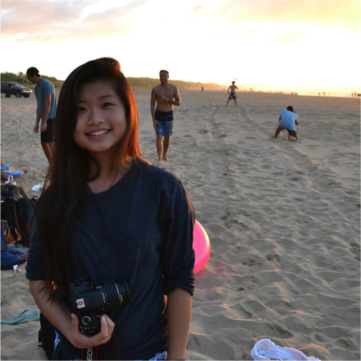

Justin Meier

Justin is studying Artificial Intelligence in Computer Science and Psychology.
Miraj Rahematpura

Miraj is studying Human Computer Interaction in Computer Science. He designed this dashing site.
Lissette Valenzuela

Lissette is studying Human Computer Interaction in Computer Science and Architecture.
Emeline Wu

Emeline is studying Biocomputation in Computer Science as a Pre-med.